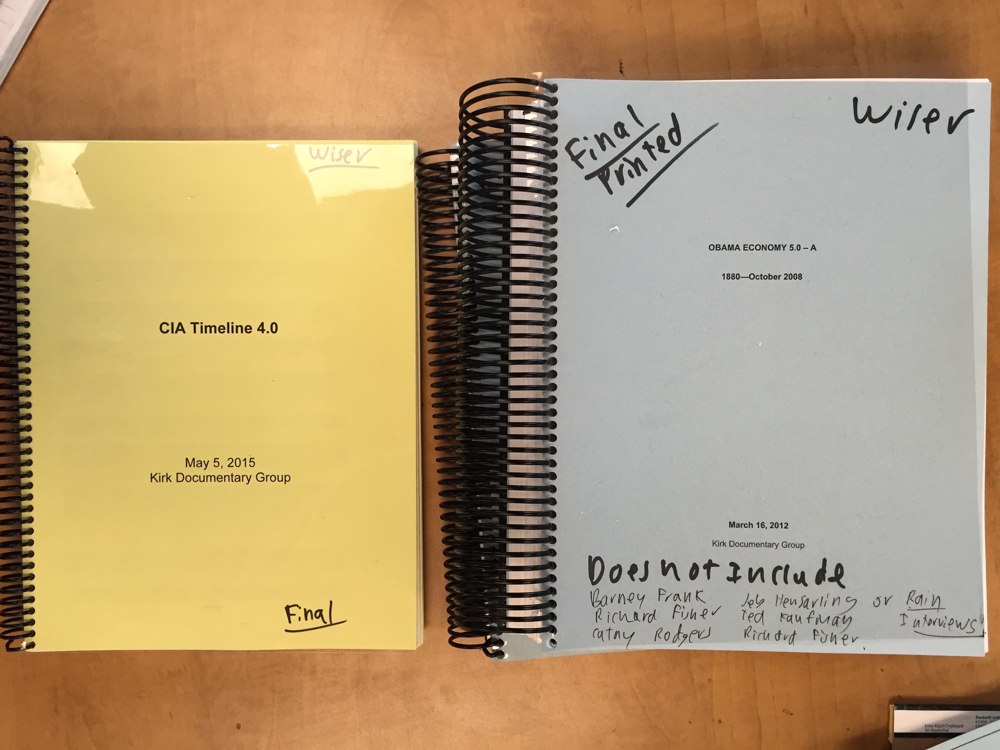
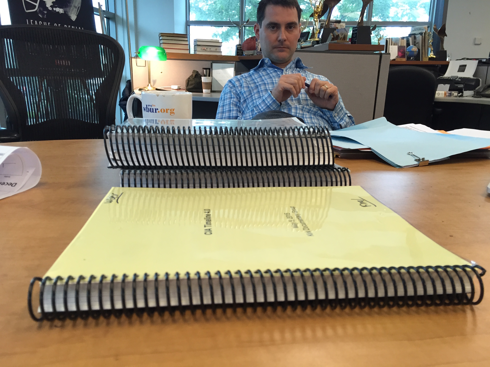

Any large investigative project or feature is going to generate a wealth of reporting that most users never see. We all have interviews, notes, research and data that inform the stories we tell but get thrown away after a story is finished. This session will focus on open notebook reporting and structured journalism, looking at ways we can better use and share more of what we collect in our reporting, without killing ourselves trying to get it online. We’ll talk about tools, practices and culture.
Open notebook reporting
the practice of making the raw materials of our reporting available to our audience, either as stand-alone content or for transparency, or for other reasons
Structured journalism
tries to break down reporting and storytelling into smaller, more modular components that encourage reusability and adaptation
Points of focus:
tools
practices
culture
Tools
What's in our arsenal? What can we solve with technology? What would we do if no one said no? What things do we need?
Practice
What do we do by default? What have we done a thousand times? How do we approach journalistic problems?
Culture
What do we value as an organization? What outputs do we actually want? How do we talk about ourselves, and our audience? How does that influence what we produce and share?


Tools
Assume no one will say no, and nothing is too hard. You're starting from scratch, to some degree. You have a bunch of reporting coming in. What tools would you want in order to use every part of the pig?
As you do this, think about the impediments you'll run into in your own organization. Where are the calcified habits that make it hard to try something new? What are the skill gaps or process failures that encourage us to do what's always been done?
Practices
Assume you have the tools. What should reporters, editors, producers be doing during the reporting process?
As you do this, think about the impediments you'll run into in your own organization. Who's going to say no? Where does this make people, including you, uncomfortable?
Your mission
Think about your example piece. Write a mission statement that outlines how you'd apply the tools and practices we've talked about to share as much of your reporting as possible with your audience.